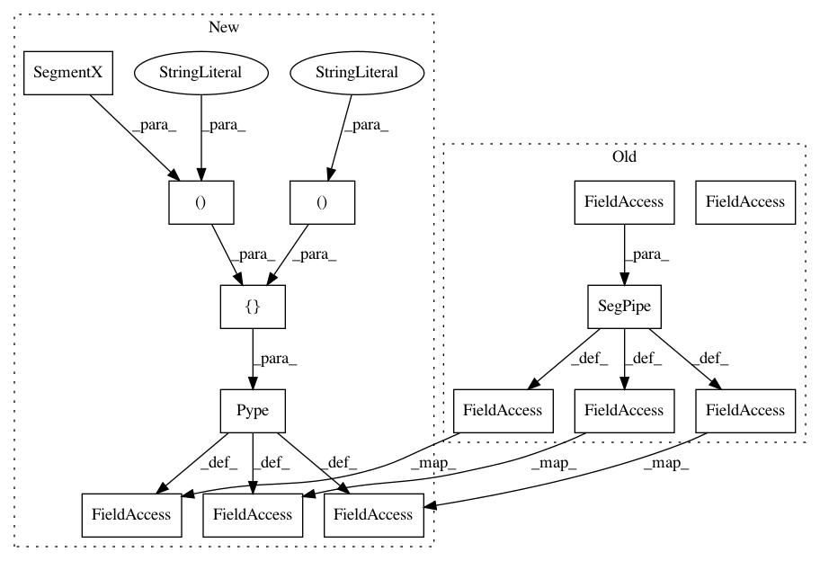

1d1b36f28b5c8fc06eacec6e7a4342987e7da03b,examples/plot_scoring.py,,,#,64
Before Change
est = Pipeline([("features", FeatureRep()),
("scaler", StandardScaler()),
("rf", RandomForestClassifier())])
pipe = SegPipe(est)
// split the data
X_train, X_test, y_train, y_test = train_test_split(X, y, test_size=0.25, random_state=42)
////////////////////////////////////////////////////////////////////////////////////////////
// OPTION 1: Use the score SegPipe score method
////////////////////////////////////////////////////////////////////////////////////////////
pipe.fit(X_train,y_train)
score = pipe.score(X_test, y_test)
print("Accuracy score: ", score)
////////////////////////////////////////////////////////////////////////////////////////////////////////////////////////////////////////////
// OPTION 2: generate true and predicted target values for the segments
////////////////////////////////////////////////////////////////////////////////////////////////////////////////////////////////////////////
y_true, y_pred = pipe.predict(X_test, y_test)
// use any of the sklearn scorers
f1_macro = f1_score(y_true, y_pred, average="macro")
print("F1 score: ", f1_macro)
cm = confusion_matrix(y_true, y_pred)
plot_confusion_matrix(cm, data["y_labels"])
////////////////////////////////////////////////////////////////////////////////////
// OPTION 3: scoring during model selection
////////////////////////////////////////////////////////////////////////////////////
// model selection using the built-in score method for the final estimator
cv_scores = cross_validate(pipe, X, y, cv = 4, return_train_score=True)
print("CV Scores: ", pd.DataFrame(cv_scores))
// model selection with scoring functions / dictionaries
After Change
y = data["y"]
// create a feature representation pipeline
steps = [("seg", SegmentX()),
("features", FeatureRep()),
("scaler", StandardScaler()),
("rf", RandomForestClassifier())]
pipe = Pype(steps)
// split the data
X_train, X_test, y_train, y_test = train_test_split(X, y, test_size=0.25, random_state=42)
////////////////////////////////////////////////////////////////////////////////////////////
// OPTION 1: Use the score SegPipe score method
////////////////////////////////////////////////////////////////////////////////////////////
pipe.fit(X_train,y_train)
score = pipe.score(X_test, y_test)
print("Accuracy score: ", score)
////////////////////////////////////////////////////////////////////////////////////////////////////////////////////////////////////////////
// OPTION 2: generate true and predicted target values for the segments
////////////////////////////////////////////////////////////////////////////////////////////////////////////////////////////////////////////
y_true, y_pred = pipe.transform_predict(X_test, y_test)
// use any of the sklearn scorers
f1_macro = f1_score(y_true, y_pred, average="macro")
print("F1 score: ", f1_macro)
cm = confusion_matrix(y_true, y_pred)
plot_confusion_matrix(cm, data["y_labels"])
////////////////////////////////////////////////////////////////////////////////////
// OPTION 3: scoring during model selection
////////////////////////////////////////////////////////////////////////////////////
// model selection using the built-in score method for the final estimator
cv_scores = cross_validate(pipe, X, y, cv = 4, return_train_score=True)
print("CV Scores: ", pd.DataFrame(cv_scores))
// model selection with scoring functions / dictionaries
In pattern: SUPERPATTERN
Frequency: 3
Non-data size: 14
Instances
Project Name: dmbee/seglearn
Commit Name: 1d1b36f28b5c8fc06eacec6e7a4342987e7da03b
Time: 2018-07-27
Author: david.mo.burns@gmail.com
File Name: examples/plot_scoring.py
Class Name:
Method Name:
Project Name: dmbee/seglearn
Commit Name: 1d1b36f28b5c8fc06eacec6e7a4342987e7da03b
Time: 2018-07-27
Author: david.mo.burns@gmail.com
File Name: examples/plot_model_selection2.py
Class Name:
Method Name:
Project Name: dmbee/seglearn
Commit Name: 1d1b36f28b5c8fc06eacec6e7a4342987e7da03b
Time: 2018-07-27
Author: david.mo.burns@gmail.com
File Name: examples/plot_nn_training_curves.py
Class Name:
Method Name: